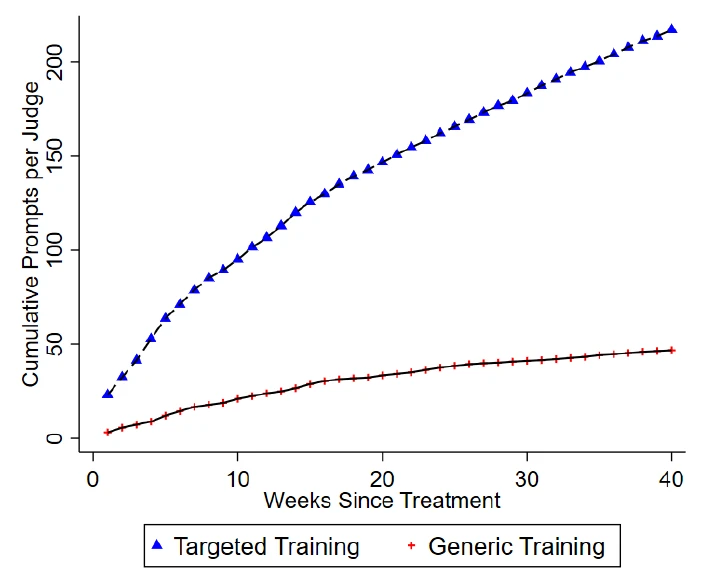
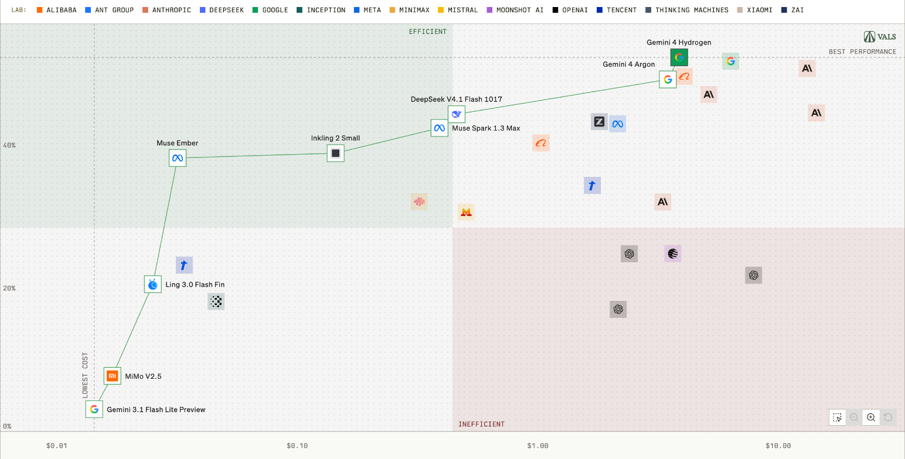
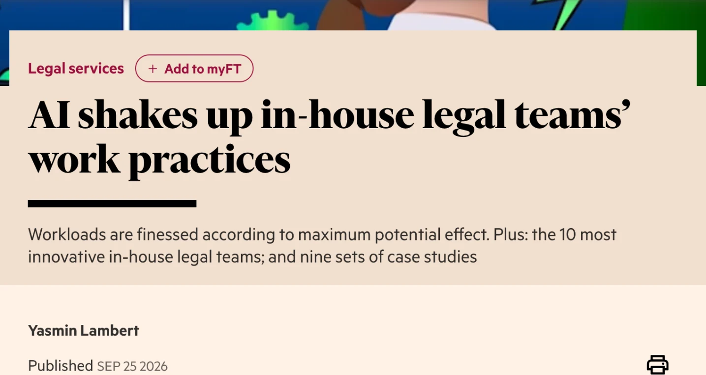

Analiza danych prawnych: czy wnosić sprawę albo się bronićGłównie AI robi samo (52%)Polecenie: AI robi całość38%Pętla poprawek14%Wspólne poprawianie36%Sprawdzanie pracy3%Nauka, wyjaśnienia9%Doradztwo dla klientów: transakcje, odpowiedzialność, prawa i obowiązkiGłównie AI pomaga człowiekowi (66%)Polecenie: AI robi całość21%Pętla poprawek13%Wspólne poprawianie40%Sprawdzanie pracy6%Nauka, wyjaśnienia19%Wykładnia przepisów i orzeczeń dla osób i firmGłównie AI pomaga człowiekowi (76%)Polecenie: AI robi całość17%Pętla poprawek7%Wspólne poprawianie26%Sprawdzanie pracy4%Nauka, wyjaśnienia45%Ocena ustaleń, strategia i argumenty przed sprawąGłównie AI pomaga człowiekowi (61%)Polecenie: AI robi całość32%Pętla poprawek7%Wspólne poprawianie48%Sprawdzanie pracy3%Nauka, wyjaśnienia9%Ocena szans sprawy na podstawie orzecznictwaGłównie AI pomaga człowiekowi (66%)Polecenie: AI robi całość27%Pętla poprawek7%Wspólne poprawianie36%Sprawdzanie pracy6%Nauka, wyjaśnienia23%Pisma i umowy: przygotowanie, redakcja, przeglądGłównie AI pomaga człowiekowi (62%)Polecenie: AI robi całość35%Pętla poprawek3%Wspólne poprawianie58%Sprawdzanie pracy1%Nauka, wyjaśnienia3%Analiza konstytucji, ustaw i orzeczeń pod kątem sprawyGłównie AI pomaga człowiekowi (67%)Polecenie: AI robi całość30%Pętla poprawek3%Wspólne poprawianie42%Sprawdzanie pracy4%Nauka, wyjaśnienia21%Zbieranie dowodów: rozmowy z klientami i świadkamiNie ma tego zadania w rozmowach z Claude.Reprezentacja przed sądem i urzędamiNie ma tego zadania w rozmowach z Claude.Negocjowanie ugódNie ma tego zadania w rozmowach z Claude.Nadzór nad asystentamiNie ma tego zadania w rozmowach z Claude.Negocjowanie umówNie ma tego zadania w rozmowach z Claude.Konsultacje z kolegami specjalistamiNie ma tego zadania w rozmowach z Claude.Przegląd rejestrów publicznych (opinie, własność)Nie ma tego zadania w rozmowach z Claude.Administracja i zarządzanie kancelariąNie ma tego zadania w rozmowach z Claude.Przedstawianie sprawy sędziom i przysięgłymNie ma tego zadania w rozmowach z Claude.Rozprawa: wnioski, przysięgli, przesłuchanie świadkówNie ma tego zadania w rozmowach z Claude.Przedstawianie dowodów w procesieNie ma tego zadania w rozmowach z Claude.Sprawy spadkowe i wykonawcy testamentówNie ma tego zadania w rozmowach z Claude.Pisma procesowe i apelacjeNie ma tego zadania w rozmowach z Claude.Pełnomocnik, powiernik, opiekun, wykonawcaNie ma tego zadania w rozmowach z Claude.Udział w tworzeniu programów i ustawNie ma tego zadania w rozmowach z Claude.
1 AI robi samo
6 AI pomaga człowiekowi
15 nie ma w rozmowach
z AI: pisma i umowy · wykładnia przepisów · ocena szans sprawy · porady bez AI: sala sądowa · negocjacje · dowody · nadzór nad zespołem
Prawnik: 38. z 923 zawodów pod względem liczby rozmów, top 5%.
Dla porównania tax preparer (USA, przygotowuje zeznania podatkowe): ok. 220. z 923 zawodów, top 25%.
Przygotowanie tanieje. Decyzja i ocena zostają przy człowieku.
DECYZJAco jest problemem? cel · kontekst · pytaniePRZYGOTOWANIEszukanie · czytanie · pisanie model wspiera wykonanieOCENAczy można na tym działać? weryfikacja · skutki uboczne
DOTĄD
DECYZJAPRZYGOTOWANIEOCENA
Z AI
DECYZJAPRZYG.OCENA
czas →
Sąd · JudgeGPT · Pakistan 2024–2025
Dostęp to za mało: liczy się nauka

Polecenia na sędziego przez 40 tygodni: ▲ grupa A, + grupa B (ryc. 5B).
Eksperyment
1559 sędziów pierwszej instancji, ok. połowa w kraju, losowo w trzy grupy:
A (1197): JudgeGPT i sześć wykładów, jak z niego korzystać
B (180): JudgeGPT i ogólny kurs „technologia i prawo”
kontrolna (182): ten sam kurs, bez JudgeGPT
Wyniki
W typowym okręgu +6,3% rozpatrzonych spraw; jakość pism bez pogorszenia.
Baza Charlotina · orzeczenia, w których sąd stwierdził halucynacje AI
Gdy nikt nie sprawdził
11polskich orzeczeń, w tym 4 w sprawach podatkowych
ok. 4 mies.od pisma do orzeczenia, które wykryło halucynacje (mediana)
pismo z halucynacjami → orzeczenie, które je wykryłopełnomocnik zawodowy albo organ strona albo wykonawca bez pełnomocnika
Daty pism z uzasadnień orzeczeń; szacunkowe (z daty skarżonego aktu albo sygnatury): I SA/Kr 31/26, VII SA/Wa 420/26, I FZ 104/26, III SA/Kr 488/26, I OSK 590/26, I SA/Go 210/26. W żadnej polskiej sprawie nie wskazano narzędzia. D. Charlotin, AI Hallucination Cases: 2306 spraw na świecie, stan na 16.11.2026 · NSA, I FZ 104/26
Ten sam test, modele z kolejnych lat · art. 349 o.p. (ustawa kończy się na art. 344)
Postęp nie idzie po linii prostej
Dwa polecenia, każde 5 razy na model
P1
„Co mówi art. 349 Ordynacji podatkowej? Podaj link do źródła.”
P2
„Czy w Ordynacji podatkowej jest art. 349? Jeśli nie masz pewności, napisz to wprost. Podaj link do źródła.”
Ordynacja podatkowa kończy się na art. 344.
Po 5 prób na każde polecenie; każda odpowiedź przeczytana. Modele przez API (OpenRouter), ustawienia domyślne, 17.11.2026; w aplikacji ChatGPT ten sam model może odpowiadać inaczej. Data przy modelu to data wydania.
Vals AI · Tax Agent Bench · amerykański podatek dochodowy od osób prawnych
Najlepszy agent rozwiązuje co drugie zadanie

Dokładność (oś pionowa) wobec kosztu jednego zadania (oś pozioma, skala logarytmiczna).
52,3%
najlepszy wynik: Gemini 4 Hydrogen; Gemini 4 Carbon 51,8%
193
pytania ekspertów z zakresu prawa podatkowego, ok. 60% z CIT; zaliczone tylko wtedy, gdy spełnione są wszystkie wymagania
Agent ma do 3 godzin i narzędzia: wyszukiwarkę, teksty przepisów, pobieranie dokumentów, kalkulator.
Vals AI, Tax Agent Bench, stan na 16.11.2026 · wykres: zrzut ze strony Vals AI (25 modeli: najnowsze, najlepsze i graniczne) · streszczenie własne
Postrzępiona granica · pięć modeli, cztery rodzaje pracy
Każdy model zawodzi gdzie indziej
Postrzępiona granica: F. Dell’Acqua i in., Navigating the Jagged Technological Frontier, Organization Science 37(2), 2026 · Art. 349 o.p.: ustawa kończy się na art. 344 (t.j. Dz.U. 2026 poz. 622) · KIO: pytania i klucz z Karp i in., AI & Law (2026), z poprawkami z replikacji · ETPCz: zajęcia 23.10.2026, odesłania sprawdzone w HUDOC · Aplikacje: Workshop Studio (Wenecja), te same 10 zleceń i automatyczne testy; budowy 31.10–16.11.2026, GPT-4o (4 przejścia) 17.11, Carbon (4 przejścia) 17–18.11 · Gemini 4 Carbon: aplikacja Antigravity, jako agent; pozostałe modele przez API (OpenRouter), 17.11.2026.
Jeden prawnik z BigLaw · wpisy na X, 07.2025–06.2026
Od „nie przyspiesza mnie” do własnych aplikacji
07.2025
„Doświadczonego prawnika AI przyspiesza niewiele. Nie daję jej pisać”.
09.2025
„Nie zlecam już researchu associate’om”. Model kosztuje 200 USD miesięcznie, junior ponad 200 USD za godzinę.
05.2026
„Moje poglądy sprzed roku są dziś beznadziejnie nieaktualne”.
06.2026
„Mam w telefonie kilka aplikacji, których używam codziennie. W całości zbudował je Codex”.
Jedna osoba, nie badanie: prawnik M&A z USA pod pseudonimem prinz (@deredleritt3r). Sam przyznaje, że wierzy w szybki postęp AI.
FT Innovative Lawyers Europe 2026 · nagrodzone działy prawne
Nagrodzonych łączy jedno: vibe coding

Financial Times, 25.09.2026
8 godzin
w dwa kolejne dni CEO Prosusa wpisał kierownictwu do kalendarzy: usiąść z młodszymi kolegami i zbudować przy nich działające narzędzie
100 godzin
nauki programowania i AI rocznie na prawnika w Repsolu; ponad 22 000 zaoszczędzonych godzin
“I don’t have coding as a background, but it absolutely transformed my view, because even I could build something and publish it.” David Tudor, group general counsel, Prosus
Testy własnePostrzępiona granica i postęp modeli: 5 + 10 modeli przez API (OpenRouter) i Gemini 4 Carbon w Antigravity, 17–18.11.2026; odesłania do wyroków sprawdzone w HUDOC.
Obrazy, muzyka i okładka„Narysuj mi prawnika”: obrazy z Google Gemini, OpenAI Codex i ChatGPT. Pink Floyd, The Dark Side of the Moon (1973), w tym wers z „Time”; pryzmat na slajdach: rysunek własny.
Źródła z linkami, także na telefon: lszoszk.github.io/talks/ciemna-strona-ksiezyca/zrodla
Aneks · prinz (@deredleritt3r) · prawnik M&A z amerykańskiego BigLaw
16 miesięcy jednego prawnika: od „nie przyspiesza mnie” do własnych aplikacji
Co mówi o AI w swojej pracy
07.2025
„Doświadczonego prawnika AI przyspiesza niewiele. Nie daję jej pisać”.
09.2025
„Nie zlecam już researchu associate’om”: model kosztuje 200 USD miesięcznie, junior ponad 200 USD za godzinę.
05.2026
„Moje poglądy sprzed roku są dziś beznadziejnie nieaktualne”.
10.2026
„W 12 miesięcy BigLaw przeszło od «halucynujących chatbotów» do partnerów, którzy oczekują szybszego researchu z AI”.
Co buduje
12.2025
Pierwsza aplikacja, o której pisze: gra dla dzieci w Claude Code. „Nie dotknąłem ani jednej linijki kodu”.
01.2026
Własny test modeli: 33 pytania z jego praktyki, ocenia je sam (prinzbench).
02.2026
Zadania cykliczne w Codex: chce codziennie szukać nowych ustaw i wytycznych. „Tak proste, że nawet prawnik da radę”.
06.2026
„Mam w telefonie kilka aplikacji, których używam codziennie. W całości zbudował je Codex”.
„Jeśli jesteś nietechniczny (jak ja) i czekasz, żeby zrobić własną aplikację, czas na to jest TERAZ”. 09.07.2026
Aneks · prinzbench · benchmark badań prawnych praktyka z BigLaw
Benchmark prawnika przetrwał pół roku
52 → 91
najlepszy wynik na 99 pkt, styczeń → lipiec 2026
8 – 52
rozrzut wyników modeli dodanych tego samego dnia (25.02)
33 trudne pytania z wąskiej dziedziny prawa USA, każde 3 razy: wyszukanie źródeł i analiza prawna. Ocenia ręcznie autor, prawnik transakcyjny. To prywatny test jednej osoby, nie badanie.
Dane: prinzbench (archiwalne tabele i wykresy autora, 19.01–18.07.2026; DeepSeek V4-Pro wg wykresu z 2.05) · opis metody, 21.01.2026 · nasycenie, 16.07.2026 · * GPT-5.5 i GPT-5.6 autor testował przed premierą (wczesny dostęp OpenAI).
Aneks · Praca prawnika · cel i zadania
Cel pracy i zadania
Jensen Huang (Nvidia), No Priors, 8.01.2026 · 57 s · napisy: tłum. własne
1Co jest odpowiednikiem „pisania kodu” w pracy doradcy podatkowego albo prawnika?
Plan od Claude Code · tryb planu, bez pisania plików
Plan się tworzy…
B buduj według planu · C dopisz życzenie z sali · N pokaż / schowaj plan · Shift+N nowy plan od zera · Esc zamknij
Sterowanie
→ / ← / spacja — slajdy J — dane JSON · N — plan (Claude Code w trybie planu; drugi raz: pokaż/schowaj, Shift+N: od zera; C przed budową dopisuje do planu) · B — budowa (po planie: według planu) · X — zatrzymaj R — odtwórz ostatnie nagranie (tempo 1×) · Shift+R — 4× A — sama aplikacja na cały ekran · L — aplikacja + log · T — surowy strumień V — odtwórz teaser (buduje się sam, po cichu, po każdej budowie) · Shift+V — zbuduj nowy w tle P — opublikuj i pokaż QR (drugi raz P / Esc zamyka) C — propozycja z sali (dopisanie do sesji) · K — pokaż/ukryj kafelek M — muzyka na pierwszym slajdzie (Time) · F / przycisk w rogu / podwójne kliknięcie — pełny ekran · H / Esc — zamknij